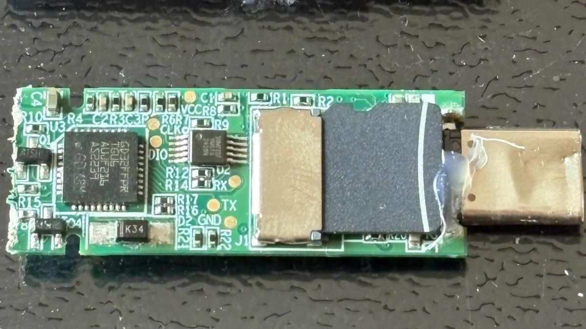

Флешка Lenovo ThinkPlus FU100 продаётся как аппаратно шифруемый накопитель: AES-256, доступ по отпечатку пальца, «защита от утечек». Реверс-инженер Xusheng Li разобрал её и обнаружил внутри обычную SD-карту, на которой данные лежали вообще без всякого шифрования. Датчик отпечатка решал лишь одно: подключаться накопитель к компьютеру или молчать. О ошибке Lenovo узнала ещё в августе 2025 года, а первым «исправлением» стал… слой эпоксидки поверх карты, чтобы её нельзя было вытащить. Полноценный патч обещали к декабрю; в собственном бюллетене компания признала слабость, позволяющую любому с физическим доступом прочитать содержимое диска.
Внешний SSD ThinkPlus TSD303 шифровал данные по-настоящему, но паспорт отдавал компьютеру открытым текстом прямо по шине USB — его мог подсмотреть любой, кто перехватывает трафик или читает память программы. Исправление тоже оказалось половинчатым: вместо пароля накопитель стал присылать блок, зашифрованный китайским алгоритмом SM4, а ключ выводился из даты — в тестах это оказалось значение вида 2021012700000000. Восстановить пароль по-прежнему было реально.
Как отмечает Tom's Hardware, в продолжении исследования автор прибег к помощи ИИ: ассистент ускорило разбор чужих прошивок и утилит, и на «защищённых» продуктах других производителей нашлись бэкдоры и жёстко зашитые ключи. В разборе также отличились Netac (утилита NetacLockFile шифровала лишь треть байтов в каждом блоке, а «256-битный» ключ был вшит прямо в exe; на уведомление компания не ответила), KakaSoft, Nexcopy, SecZure и Lexar. Отдельного официального анонса у истории нет — только исследовательский доклад с конференции RE//verse и лаконичный бюллетень безопасности Lenovo.
Надпись «AES-256» на упаковке — не криптографическое доказательство, а маркетинговое. Если на флешке лежат чувствительные данные, шифруйте их сами проверенным ПО (например VeraCrypt) — тогда носителю не придётся доверять, а отпечаток пальца считайте convenience-функцией, а не защитой. И держите в голове старую истину: физический доступ к носителю означает доступ к данным — вопрос лишь в стоимости атаки.